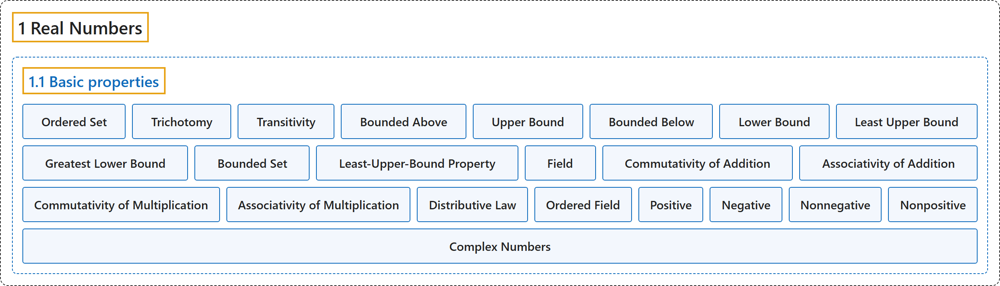

1.1 Basic properties
Classification

Glossary
| Term | Definition | 中文翻译 | Source |
|---|---|---|---|
| 1.1 Basic properties 基本性质 |
(No definition) | （无定义） | Lebl, 2026, section 1.1 |
| Ordered Set 有序集 |
"An ordered set is a set \(S\) together with a relation \(<\) such that (trichotomy) For all \(x, y \in S\), exactly one of \(x < y\), \(x=y\), or \(y < x\) holds. (transitivity) If \(x,y,z \in S\) are such that \(x < y\) and \(y < z\), then \(x < z\)." | 有序集是一个集合 \(S\) 连同一个关系 \(<\)，满足：（三歧性）对所有 \(x, y \in S\)，\(x < y\)、\(x=y\)、\(y < x\) 中恰有一个成立。（传递性）若 \(x,y,z \in S\) 满足 \(x < y\) 且 \(y < z\)，则 \(x < z\)。 | Lebl, 2026, Definition 1.1.1 |
| Trichotomy 三歧性 |
"(trichotomy) For all \(x, y \in S\), exactly one of \(x < y\), \(x=y\), or \(y < x\) holds." | （三歧性）对所有 \(x, y \in S\)，\(x < y\)、\(x=y\)、\(y < x\) 中恰有一个成立。 | Lebl, 2026, Definition 1.1.1 |
| Transitivity 传递性 |
"(transitivity) If \(x,y,z \in S\) are such that \(x < y\) and \(y < z\), then \(x < z\)." | （传递性）若 \(x,y,z \in S\) 满足 \(x < y\) 且 \(y < z\)，则 \(x < z\)。 | Lebl, 2026, Definition 1.1.1 |
| Bounded Above 上有界 |
"If there exists a \(b \in S\) such that \(x \leq b\) for all \(x \in E\), then we say \(E\) is bounded above and \(b\) is an upper bound of \(E\)." | 若存在 \(b \in S\) 使得对所有 \(x \in E\) 有 \(x \leq b\)，则称 \(E\) 上有界，\(b\) 是 \(E\) 的一个上界。 | Lebl, 2026, Definition 1.1.2 |
| Upper Bound 上界 |
"If there exists a \(b \in S\) such that \(x \leq b\) for all \(x \in E\), then we say \(E\) is bounded above and \(b\) is an upper bound of \(E\)." | 若存在 \(b \in S\) 使得对所有 \(x \in E\) 有 \(x \leq b\)，则称 \(E\) 上有界，\(b\) 是 \(E\) 的一个上界。 | Lebl, 2026, Definition 1.1.2 |
| Bounded Below 下有界 |
"If there exists a \(b \in S\) such that \(x \geq b\) for all \(x \in E\), then we say \(E\) is bounded below and \(b\) is a lower bound of \(E\)." | 若存在 \(b \in S\) 使得对所有 \(x \in E\) 有 \(x \geq b\)，则称 \(E\) 下有界，\(b\) 是 \(E\) 的一个下界。 | Lebl, 2026, Definition 1.1.2 |
| Lower Bound 下界 |
"If there exists a \(b \in S\) such that \(x \geq b\) for all \(x \in E\), then we say \(E\) is bounded below and \(b\) is a lower bound of \(E\)." | 若存在 \(b \in S\) 使得对所有 \(x \in E\) 有 \(x \geq b\)，则称 \(E\) 下有界，\(b\) 是 \(E\) 的一个下界。 | Lebl, 2026, Definition 1.1.2 |
| Least Upper Bound 最小上界（上确界） |
"If there exists an upper bound \(b_0\) of \(E\) such that \(b_0 \leq b\) for all upper bounds \(b\) of \(E\), then \(b_0\) is called the least upper bound or the supremum of \(E\)." | 若存在 \(E\) 的一个上界 \(b_0\)，使得对 \(E\) 的所有上界 \(b\) 有 \(b_0 \leq b\)，则 \(b_0\) 称为 \(E\) 的最小上界或上确界。 | Lebl, 2026, Definition 1.1.2 |
| Greatest Lower Bound 最大下界（下确界） |
"Similarly, if there exists a lower bound \(b_0\) of \(E\) such that \(b_0 \geq b\) for all lower bounds \(b\) of \(E\), then \(b_0\) is called the greatest lower bound or the infimum of \(E\)." | 类似地，若存在 \(E\) 的一个下界 \(b_0\)，使得对 \(E\) 的所有下界 \(b\) 有 \(b_0 \geq b\)，则 \(b_0\) 称为 \(E\) 的最大下界或下确界。 | Lebl, 2026, Definition 1.1.2 |
| Bounded Set 有界集 |
"When a set \(E\) is both bounded above and bounded below, we say simply that \(E\) is bounded." | 当集合 \(E\) 既上有界又下有界时，我们简单地说 \(E\) 是有界的。 | Lebl, 2026, Definition 1.1.2 |
| Least-Upper-Bound Property 最小上界性 |
"An ordered set \(S\) has the least-upper-bound property if every nonempty subset \(E \subset S\) that is bounded above has a least upper bound, that is, \(\sup\, E\) exists in \(S\)." | 有序集 \(S\) 具有最小上界性，如果 \(S\) 的每个上有界的非空子集 \(E \subset S\) 都有最小上界，即 \(\sup\, E\) 在 \(S\) 中存在。 | Lebl, 2026, Definition 1.1.3 |
| Field 域 |
"A set \(F\) is called a field if it has two operations defined on it, addition \(x+y\) and multiplication \(xy\), and if it satisfies the following axioms:" | 集合 \(F\) 称为域，如果它上面定义了两种运算：加法 \(x+y\) 和乘法 \(xy\)，并且满足以下公理： | Lebl, 2026, Definition 1.1.5 |
| Commutativity of Addition 加法交换律 |
"(commutativity of addition) \(x+y = y+x\) for all \(x,y \in F\)." | （加法交换律）对所有 \(x,y \in F\)，\(x+y = y+x\)。 | Lebl, 2026, Definition 1.1.5 |
| Associativity of Addition 加法结合律 |
"(associativity of addition) \((x+y)+z = x+(y+z)\) for all \(x,y,z \in F\)." | （加法结合律）对所有 \(x,y,z \in F\)，\((x+y)+z = x+(y+z)\)。 | Lebl, 2026, Definition 1.1.5 |
| Commutativity of Multiplication 乘法交换律 |
"(commutativity of multiplication) \(xy = yx\) for all \(x,y \in F\)." | （乘法交换律）对所有 \(x,y \in F\)，\(xy = yx\)。 | Lebl, 2026, Definition 1.1.5 |
| Associativity of Multiplication 乘法结合律 |
"(associativity of multiplication) \((xy)z = x(yz)\) for all \(x,y,z \in F\)." | （乘法结合律）对所有 \(x,y,z \in F\)，\((xy)z = x(yz)\)。 | Lebl, 2026, Definition 1.1.5 |
| Distributive Law 分配律 |
"(distributive law) \(x(y+z) = xy+xz\) for all \(x,y,z \in F\)." | （分配律）对所有 \(x,y,z \in F\)，\(x(y+z) = xy+xz\)。 | Lebl, 2026, Definition 1.1.5 |
| Ordered Field 有序域 |
"A field \(F\) is said to be an ordered field if \(F\) is also an ordered set such that For \(x,y,z \in F\), \(x < y\) implies \(x+z < y+z\). For \(x,y \in F\), \(x > 0\) and \(y > 0\) implies \(xy > 0\)." | 域 \(F\) 称为有序域，如果 \(F\) 同时是一个有序集，并且：对 \(x,y,z \in F\)，\(x < y\) 蕴含 \(x+z < y+z\)；对 \(x,y \in F\)，\(x > 0\) 且 \(y > 0\) 蕴含 \(xy > 0\)。 | Lebl, 2026, Definition 1.1.7 |
| Positive 正 |
"If \(x > 0\), we say \(x\) is positive." | 若 \(x > 0\)，则称 \(x\) 是正的。 | Lebl, 2026, Definition 1.1.7 |
| Negative 负 |
"If \(x < 0\), we say \(x\) is negative." | 若 \(x < 0\)，则称 \(x\) 是负的。 | Lebl, 2026, Definition 1.1.7 |
| Nonnegative 非负 |
"We also say \(x\) is nonnegative if \(x \geq 0\), and \(x\) is nonpositive if \(x \leq 0\)." | 若 \(x \geq 0\)，我们也称 \(x\) 是非负的；若 \(x \leq 0\)，则称 \(x\) 是非正的。 | Lebl, 2026, Definition 1.1.7 |
| Nonpositive 非正 |
"We also say \(x\) is nonnegative if \(x \geq 0\), and \(x\) is nonpositive if \(x \leq 0\)." | 若 \(x \geq 0\)，我们也称 \(x\) 是非负的；若 \(x \leq 0\)，则称 \(x\) 是非正的。 | Lebl, 2026, Definition 1.1.7 |
| Complex Numbers 复数 |
"The reader may have heard about the complex numbers, usually denoted by \(\mathbb{C}\). That is, \(\mathbb{C}\) is the set of numbers of the form \(x + iy\), where \(x\) and \(y\) are real numbers, and \(i\) is the imaginary number, a number such that \(i^2 = -1\)." | 读者也许听说过复数，通常记作 \(\mathbb{C}\)，即 \(\mathbb{C}\) 是形如 \(x + iy\) 的数构成的集合，其中 \(x\)、\(y\) 是实数，\(i\) 是虚数单位，满足 \(i^2 = -1\)。 | Lebl, 2026, Example 1.1.10 |
References
Lebl, J. (2026). Basic analysis I & II: Introduction to real analysis (May 22, 2026 edition). Retrieved October 29, 2026, from https://www.jirka.org/ra/html/